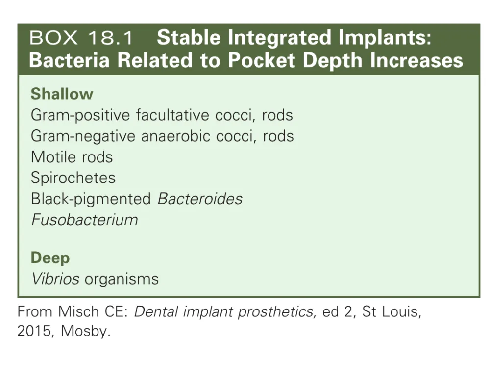
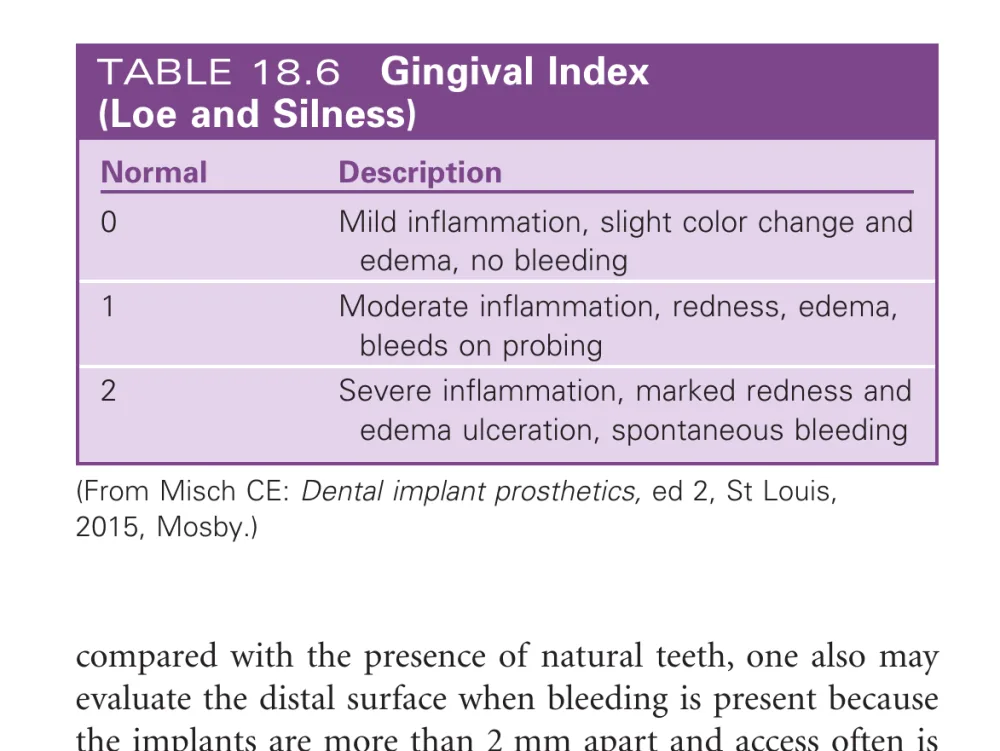

نسخه استخراجشده؛ ترجمه یا تأیید علمی انجام نشده است. وضعیت: captured
این یونیت با یک تفاوت هیستولوژیک شروع میشود که همهچیزِ بعدی را توضیح میدهد.
در دندان طبیعی: «باکتریهای مسئول ژنژیویت پیرامون یک دندان میتوانند اتصال اپیتلیالی را بدون از دست رفتن اتصال بافت همبند درگیر کنند. چون اتصال بافت همبند یک دندان بهطور میانگین ۱٫۰۷ میلیمتر بالای کرست استخوان امتداد مییابد، دستکم ۱ میلیمتر سد محافظ بالای استخوان باقی میماند.»
و در ایمپلنت: «در مقابل، هیچ ناحیهی اتصال بافت همبندی پیرامون ایمپلنت وجود ندارد، چون هیچ فیبر همبندی به درون سطح ایمپلنت امتداد نمییابد. بنابراین هیچ سد بافت همبندی برای محافظت از استخوان کرستال پیرامون ایمپلنت وجود ندارد.»
معنای بالینی این جمله را دستکم نگیر. دندان طبیعی یک بافر یکمیلیمتری میان التهاب لثه و استخوان دارد. ایمپلنت ندارد. یعنی همان مقدار التهابی که روی دندان «ژنژیویت برگشتپذیر» است، روی ایمپلنت میتواند مستقیماً به استخوان برسد.
حالا واژهها. «شرایط التهابی پیرامون ایمپلنتهای دندانی یا پروتزهای آنها مجموعاً بیماری پریایمپلنت تعریف میشوند. شایعترین اصطلاحات پذیرفتهشده در ایمپلنتولوژی، پریموکوزیت و پریایمپلنتیت، از نخستین کارگاه اروپایی پریودنتولوژی در سال ۱۹۹۴ برخاستهاند.»
و شیوع، که تکاندهنده است: پریایمپلنت موکوزیت (خونریزی هنگام پروب بدون تحلیل استخوان) در ۷۹ تا ۹۰ درصد بیماران و ۵۰ درصد ایمپلنتها. پریایمپلنتیت در ۲۸ تا ۵۶ درصد بیماران و ۱۲ تا ۴۳ درصد جایگاههای ایمپلنت.
و اکنون مهمترین تفاوت اتیولوژیک ایمپلنت با دندان: «در مقابلِ دندانها، تحلیل استخوان کرستال زودهنگام پیرامون ایمپلنت پس از پروتز معمولاً از باکتری ناشی نمیشود. بیشتر اوقات تحلیل استخوان از عوامل استرسی بیش از حد برای رابط استخوان-ایمپلنتِ نابالغ و ناکاملمعدنیشده، یا از گسترش عرض بیولوژیک روی یک کرستماژول فلزی صاف ناشی میشود.»
این جمله را حفظ کن، چون در سه درس بعدی بارها به آن برمیگردیم: تحلیل استخوانِ زودهنگام پیرامون ایمپلنت غالباً از استرس بیش از حد یا گسترش عرض بیولوژیک است، نه میکروبی. باکتری بعداً نقش اصلی را میگیرد — وقتی سولکوس عمیق شد و تنش اکسیژن افت کرد.
و همانجا باکتری وارد میشود: «باکتریهای بیهوازی در میکروگپ میان ایمپلنت و اباتمنت یا در سولکوس ایمپلنتها مشاهده شدهاند، بهویژه وقتی عمق سولکوس بیش از ۵ میلیمتر باشد» (کادر ۱۸٫۱).
و علائم بالینی پریایمپلنتیت (کادر ۱۸٫۲): تحلیل استخوان عمودی (رادیوگرافیک، پروبینگ، یا هر دو)، پاکتهای پریایمپلنت، خونریزی هنگام پروب، اگزودای احتمالی، تورم موکوزال، اریتم، و نبود درد.
«نبود درد» یک علامت است، نه یک تسکین. پریایمپلنتیت پیشرونده میتواند بیسروصدا استخوان را ببرد. به همین دلیل است که پروتکل نگهداری — نه شکایت بیمار — تشخیص را میسازد.

بیا از اینجا شروع کنیم: «شاخصهای پریودنتال اغلب برای ارزیابی ایمپلنتهای دندانی به کار میروند. مقایسهی دندان طبیعی و ایمپلنت برای هر معیار، بینشی از تفاوتهای آنها در پیوستار سلامت-بیماری میدهد.»
به منطق کار دقت کن. هدف این نیست که اندیسهای پریو را عیناً روی ایمپلنت اجرا کنیم؛ هدف این است که بفهمیم هر اندیس روی ایمپلنت چه معنای متفاوتی میدهد — و سپس از همانها یک مقیاس کیفیت ایمپلنت بسازیم که در درس چهارم میبینی.
شاخص لثهای (Loe و Silness)، رایجترین اندیس خونریزی برای ایمپلنت، التهاب را روی سطوح فاسیال، لینگوال و مزیال از ۰ تا ۳ نمره میدهد:
نقطهی مرزی، درجهی ۲ است. خونریزی هنگام پروب اولین علامت عینی است که از «تغییر رنگ» عبور میکند — و در مقیاس کیفیت ایمپلنت (درس ۴) دقیقاً همین BOP است که خط میان موفقیت و بقای رضایتبخش را میکشد.
و یک نکتهی تکنیکی مهم دربارهی پروبینگ: در مقایسه با دندان طبیعی، هنگام ارزیابی ایمپلنت میتوان سطح دیستال را هم وقتی خونریزی هست ارزیابی کرد، چون ایمپلنتها بیش از ۲ میلیمتر از هم فاصله دارند و دسترسی اغلب باز است.
و پاتوژنهای اختصاصی پاکتهای بیش از ۶ میلیمتر:Aggregatibacter actinomycetemcomitans، Prevotella intermedia و P. gingivalis — که با آنالیز DNA در بیش از یکسوم جایگاهها تأیید شدهاند.
و یک یافتهی کمتر شناختهشده: در جایگاههای ایمپلنت نسبتهای بالاتری از استافیلوکوکها (۱۵٫۱ درصد) گزارش شده است، در مقایسه با ۰٫۰۶ درصد در ژنژیویت و ۱٫۲ درصد در پریودنتیت. یعنی استافیلوکوک ممکن است در ضایعات پریایمپلنتیت بسیار مهمتر از آنچه پیشتر تصور میشد باشد. و در نمونههای پلاک ایمپلنتهای سالم و خوبنگهداریشده هیچ اسپیروکتی دیده نشد.
پس فلور پریایمپلنتیت شبیه فلور پریودنتیت مزمن است، ولی عیناً همان نیست — سهم استافیلوکوک بالاتر است.
